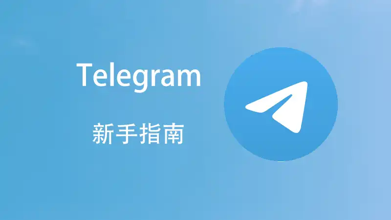

Telegram怎么备份？
Telegram的数据会自动同步到云端，包括聊天记录、文件、照片等。因此，你无需手动备份聊天内容。为了更好地保护数据，可以将重要文件下载到本地或备份到云存储（如Google Drive）。若需要备份Telegram的聊天记录，可以通过第三方工具进行导出，但Telegram本身不提供直接的聊天记录备份功能。

如何备份Telegram聊天记录
使用Telegram云同步功能备份聊天数据
自动云同步: Telegram会自动将所有聊天记录、媒体文件和文件同步到云端。只要你在Telegram中使用相同的账户登录，所有的聊天记录和文件都可以在不同设备间同步，无需手动备份。
多设备支持: 你可以在多个设备上使用Telegram账户，而聊天记录会在所有设备上实时同步，保证数据的完整性和一致性。无论你使用手机、电脑还是平板，聊天记录都会通过云同步进行备份。
数据存储安全: Telegram的云存储采用加密技术，确保聊天内容在传输和存储过程中的安全性。虽然内容存储在云端，但Telegram对用户数据提供了严格的隐私保护措施。
通过第三方工具导出Telegram聊天记录
使用Telegram的导出工具: Telegram为桌面版用户提供了聊天记录导出功能。在PC端的Telegram中，你可以进入“设置”>“高级”>“导出 Telegram 数据”，选择你想导出的聊天记录、文件和媒体文件。
选择导出格式: 导出聊天记录时，Telegram允许用户选择多种文件格式，如HTML或JSON格式，这些格式便于查看和存档聊天记录。你可以选择导出全部聊天记录，或仅导出指定的聊天内容。
保存到本地或云存储: 导出的聊天记录文件可以保存到本地存储设备，也可以上传到云存储服务（如Google Drive或Dropbox）进行备份，确保数据的安全存储并方便日后查看。
Telegram备份功能介绍
Telegram自动同步数据如何工作
云端同步功能: Telegram会自动将所有聊天记录、文件和多媒体内容同步到云端，无需用户手动备份。当你在Telegram应用内进行任何操作时，如发送消息、下载文件或接收图片，这些内容会立即上传并同步到Telegram的云服务器中。
多设备同步: Telegram的云同步功能支持多设备同时使用。当你在一个设备上登录账户时，所有的聊天记录和文件会同步到该设备，并与其他设备保持一致。这样，无论你在手机、平板、还是电脑上使用Telegram，都能实时获取最新的聊天内容。
数据自动更新: 每当你发送或接收消息时，Telegram会自动将新的数据更新到云端。这意味着你无需担心数据丢失，所有内容都会保存在云端，确保无论设备发生何种变更，你的聊天记录都能无缝地恢复。
如何使用Telegram的云存储备份文件
自动上传文件到云端: Telegram的所有文件（如图片、视频、文档等）会自动保存到Telegram的云存储中，无论你是否删除它们，文件都会存在云端。你可以随时通过任何设备访问这些文件。
查看和下载云存储文件: 在Telegram中，你可以通过“媒体”选项查看所有存储在云端的文件。若你需要下载文件，可以直接点击文件进行下载。所有的文件都将保留在Telegram的云端存储中，便于在不同设备间访问。
管理云端存储: 如果你想管理Telegram的云存储，可以在“设置”中进入“数据与存储”选项，查看云存储的使用情况并清理不需要的文件。通过清理缓存或不需要的媒体文件，可以节省云端存储空间，同时保持聊天记录和重要文件的安全。
Telegram文件备份方法
如何将Telegram中的文件保存到本地
下载文件到设备: 在Telegram中，任何接收到的文件（如图片、视频、文档等）都可以直接保存到本地设备中。打开聊天记录，点击需要保存的文件，选择“保存到设备”选项，文件会被下载并保存在你设备的存储空间中。
通过文件管理器查看: 文件下载后，你可以使用手机或电脑的文件管理器查找已下载的文件。在安卓设备上，这些文件通常保存在“Telegram”文件夹内，而在iPhone上，它们通常保存在“文件”应用的“Telegram”文件夹中。
批量下载文件: 对于需要备份大量文件的用户，可以批量下载聊天记录中的所有媒体内容。进入聊天设置，选择“清除媒体”或“保存所有媒体”选项，方便将多个文件保存到本地设备中。
使用云服务备份Telegram文件的技巧
利用Google Drive进行备份: 如果你希望在Telegram之外备份文件，可以将Telegram文件上传到Google Drive等云服务中。下载Telegram中的文件后，使用Google Drive或其他云存储服务的应用手动上传。你可以按需组织文件夹，确保重要文件得到妥善保存。
使用Dropbox或OneDrive: 除了Google Drive，Dropbox和OneDrive也是流行的云存储选择。你可以将Telegram中的文件下载到本地设备，然后通过这些云服务应用上传文件，保证文件的安全性，并且在不同设备间随时访问。
自动化备份方法: 为了简化文件备份过程，许多云服务提供自动同步功能。安装云服务应用并设置文件夹同步后，Telegram文件可以自动备份到云端，无需手动上传，确保每次新文件加入时都能及时同步并备份。
如何备份Telegram数据到Google Drive
在Google Drive中保存Telegram文件的步骤
下载文件到本地: 首先，在Telegram中打开你想备份的文件。点击文件，选择“保存到设备”以将文件下载到手机或电脑的存储中。
打开Google Drive应用: 打开你的Google Drive应用（或通过浏览器访问Google Drive），进入你希望保存文件的文件夹。
上传文件到Google Drive: 点击“+”图标，选择“上传文件”，然后选择你从Telegram下载的文件。上传后，文件将存储在你的Google Drive中，可以随时访问并共享。
自动同步Telegram文件到Google Drive的设置方法
使用Google Drive的同步功能: 在你的手机或电脑上安装Google Drive应用，确保文件同步功能已开启。将Telegram下载的文件放置在Google Drive的同步文件夹中，这样文件将自动上传到云端。
利用第三方应用自动同步: 如果希望实现Telegram文件的自动备份，可以通过使用第三方应用（如IFTTT）进行自动化设置。例如，你可以设置IFTTT自动将Telegram中接收到的所有文件同步到Google Drive指定文件夹。
定期备份文件: 在Google Drive应用中设置定期备份选项，确保所有新的Telegram文件会定期自动同步到Google Drive，无需手动上传。这可以帮助你在Telegram中接收到新文件时自动进行云端备份。
Telegram聊天记录导出与备份
如何导出Telegram聊天记录进行备份
使用Telegram的导出功能: 在桌面版Telegram中，你可以直接导出聊天记录。进入“设置”>“高级”>“导出Telegram数据”选项，选择你想要备份的聊天记录。你可以选择导出特定的聊天内容，或者选择导出所有聊天记录。
选择导出格式: 在导出过程中，Telegram允许你选择导出的文件格式，如HTML或JSON。HTML格式适合浏览，方便查看聊天记录，而JSON格式适合数据存储和其他工具处理。
保存文件到本地设备: 导出的聊天记录会保存为文件，你可以选择将其保存在本地存储中，或者上传到云存储服务，如Google Drive、Dropbox等进行备份，确保文件的安全性和便于以后查看。
第三方工具如何帮助你备份Telegram记录
使用Telegram备份工具: 除了Telegram自带的导出功能外，第三方工具如“Telegram Backup”也可以帮助你备份聊天记录。这些工具通常提供更灵活的备份选项，如定期自动备份聊天记录，支持多种导出格式，满足不同用户的需求。
利用聊天记录管理软件: 一些聊天记录管理软件，如“ChatKeeper”和“Telegram Exporter”，可以帮助用户更方便地备份和管理Telegram聊天记录。这些工具支持批量备份聊天内容，按日期或群组分类存储文件，并且支持多平台操作。
自动化备份过程: 通过使用自动化脚本（如Python脚本），你可以定期自动备份Telegram聊天记录。这些脚本可以帮助你定期导出聊天记录并保存为本地文件，或同步到云存储，确保所有重要数据都得到备份，无需手动操作。
Telegram聊天记录能自动备份吗？
如何备份Telegram中的文件和图片？
如何导出Telegram聊天记录？
Telegram中文 其他新闻
telegram中文语言包怎么安装？
Telegram中文语言包会随应用自动安装和更新。要启用中文，首先确保你已经安装了最新版本的Telegram应 […]

电报怎么解禁？
如果你的Telegram账号被封禁，通常是因为违反了Telegram的使用政策。要解封，可以向Telegram […]
telegram安卓中文版
Telegram是一款广受欢迎的即时通讯应用，提供安卓中文版，用户可以通过应用商店下载。它支持文本、语音消息、 […]
电报二维码怎么加好友？
要通过电报二维码加好友，首先需要打开电报下载好的应用，点击右下角的“联系人”按钮。然后选择右上角的“添加联系人 […]